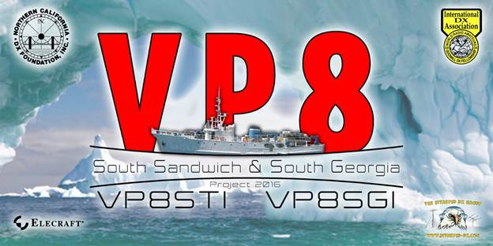

From Paul, N6PSE, and the VP8 Dxpedition Team. From: paul@n6pse.com [mailto:paul@n6pse.com]  VP8SGI/VP8STI News from Paul N6PSE The Intrepid DX Group’s VP8SGI/VP8STI team is pleased to announce our operating strategy which will allow us to work as many unique callers as possible during each of these activations. During our voyage to South Sandwich, which is the first island that we will activate, we will use our newly donated BGAN terminal to access solar data. We will also check in with our US, EU and JA Pilots to determine which bands are currently propagating well. We will then select a band; possibly 20, 17 or 15 meters and we will be QRV with one station on this band for the duration of the Dxpedition. This will give everyone a chance to work us at least once on the selected band. In addition, during our final 24 hours of QRV from each island, we will announce and only accept contacts from new-first time stations on this selected band. Those chasing band slots can work us 10-160 meters on the other bands; however we feel that it is of critical importance that our primary strategy includes a means for everyone to make at least one contact with these rare islands. We are pleased to announce our “Early Donor” program for donations prior to departure to the Islands. For all donations of $25 or more, we will perform an early LoTW upload and we will include all $25 or more donors in the first batch of QSL processing. Our OQRS will be live during the Dxpedition. Direct QSL cards and bureau QSL cards will be processed last. Our plans are moving forward in all aspects. We are about to make our second installment of $113,000 to the Braveheart. The Dxpedition Team has committed to paying half the costs of this Dxpedition and our Team’s contribution is $210,000. To date, we have raised $105,000 towards our goal of raising $215,000. This puts us at 47% of our target. We would welcome additional support from the many DX Clubs around the globe. At the time of our activations, South Sandwich will be the #3 most wanted entity, while South Georgia will be the #7 most wanted DXCC entity. All information about our plans can be found on our website: http://www.intrepid-dx.com/vp8 Lastly, many of the VP8STI/VP8SGI Team members will be attending the 2015 Hamvention this weekend in Dayton, Ohio. We look forward to meeting and sharing our plans with everyone interested in VP8STI/VP8SGI. Thank you, The Intrepid-DX Group VP8 Team |